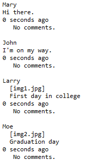
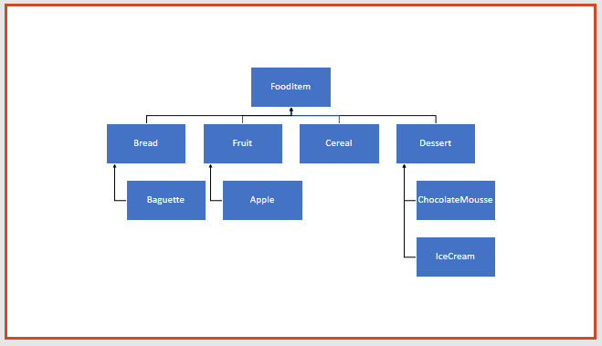

Objectives
Social Network app · Inheritance · Polymorphism · Overriding
Network-V1
In this step, you will familiarise yourself with the original version of the Network example (without inheritance).
Creating Network V1 Project
In IntelliJ, create a new project called Network-V1.
Copy the following classes into the project:
Testing the project
In the above project, create a new class called Test. Copy the following code into it:
This class is a test harness and tests the three classes by performing the following actions:
- Create 2 MessagePost objects.
- Create 2 PhotoPosts objects.
- Create 1 NewsFeed object.
- Add 1 PhotoPost object to the NewsFeed object.
- Add 1 MessagePost object to the NewsFeed object.
- Add another PhotoPost object to the NewsFeed object.
- Add another MessagePost object to the NewsFeed object.
- List all messagePost and photoPosts from the NewsFeed object.
Run this test class and interrogate the output.
Note the order of the posts...figure out why the order is different than the order of input.

Moving onto the next version
Before moving onto v2, ensure that you:
understand the code in v1.
notice the code duplication and the problems that it could cause.
Solution
The solution to network-v1 is here.
Network-V2
In this step, you will familiarise yourself with the second version of the Network example (with inheritance).
Creating Network V2 Project
In IntelliJ, create a new project called Network-V2.
Copy the following classes into the project:
Testing the project
In the above project, create a new class called Test. Copy the following code into it:
This test class will repeat these steps that you did with v1:
- Create 2 MessagePost objects.
- Create 2 PhotoPosts objects.
- Create 1 NewsFeed object.
- Add 1 PhotoPost object to the NewsFeed object.
- Add 1 MessagePost object to the NewsFeed object.
- Add another PhotoPost object to the NewsFeed object.
- Add another MessagePost object to the NewsFeed object.
- List all messagePost and photoPosts from the NewsFeed object.
Note the difference in the order (the details are now printed in the order they were entered).

Note that all the details associated with each post are not displayed when we "List all posts"? Why do you think details are missing? Note: we will fix this later in the lab.
Solution
The solution to network-v2 is here.
Exercises
These exercises are based on the exercises in Chapter 8 of Objects First with Java - A Practical Introduction Using Bluej, by David Barnes & Michael Kolling).
Exercise 1
Order the following items into an inheritance hierarchy :
Apple
IceCream
Bread
Fruit
FoodItem
Cereal
Dessert
ChocolateMousse
Baguette
Exercise 2
Assume that we have four classes :
Person
Teacher
Student
PhDStudent
Teacher and Student are both subclasses of Person. PhDStudent is a subclass of Student.
- Which of the following assignments are legal and why or why not:
Person p1 = new Student();
Person p2 = new PhDStudent ();
PhDStudent phd1 = new Student();
Teacher t1 = new Person();
Student s1 = new PhDStudent ();Exercise 3
Given the Person hierarchy from Exercise 2, suppose that we have the following legal declarations and assignments:
Person p1 = new Person();
Person p2 = new Person ();
PhDStudent phd1 = new PhDStudent();
Teacher t1 = new Teacher();
Student s1 = new Student ();- Based on those just mentioned, which of the following assignments are legal and why or why not?
s1 = p1;
s1 = p2;
p1 = s1;
t1 = s1;
s1 = phd1;
phd1 = s1;Solutions
Exercise 1 Solution
The question was...order the following items into an inheritance hierarchy :
apple
ice-cream
bread
fruit
food-item
cereal
dessert
chocolate mousse
baguette
The answer is:

Exercise 2
In the Person hierarchy, Teacher and Student are both subclasses of Person. PhDStudent is a subclass of Student.

Person p1 = new Student(); // This is legal because a Student "is a" Person.
// We are following the direction of the arrows in the
// inheritance diagram.Person p2 = new PhDStudent (); // This is legal because a PhDStudent "is a" Person.
// We are following the direction of the arrows in the
// inheritance diagram.PhDStudent phd1 = new Student(); // This is NOT legal because a Student "may not be"
// a PhDStudent. We are going against the direction
// of the arrows in the inheritance diagram.Teacher t1 = new Person(); // This is NOT legal because a Person "may not be"
// a Teacher. For example, the Person could be a Student.
// We are going against the arrows in the
// inheritance diagram.Student s1 = new PhDStudent(); //This is legal because a PhDStudent "is a" Student.
// We are following the arrows in the inheritance diagram.Exercise 3
Given the Person hierarchy from Exercise 2:
...suppose that we have the following legal declarations and assignments:
Person p1 = new Person();
Person p2 = new Person ();
PhDStudent phd1 = new PhDStudent();
Teacher t1 = new Teacher();
Student s1 = new Student ();Based on these legal variable declarations, which of the following assignments are legal and why or why not?
s1 = p1; // This is NOT legal...a Person "may not be" a Student.
// We are going against the arrows in the inheritance diagram.s1 = p2; // Again, this is NOT legal...a Person "may not be" a Student.
// We are going against the arrows in the inheritance diagram.p1 = s1; // This is legal...a Student "is a" Person.
// We are following the direction of the arrows in the inheritance diagram.t1 = s1; // This is NOT legal...there is no relationship between a Teacher and a
// Student in our inheritance diagram.s1 = phd1; // This is legal...a PhDStudent "is a" Student.
// We are following the direction of the arrows in the inheritance diagram.phd1 = s1; // However, this is NOT legal...a Student "may not be" a PhDStudent.
// We are going against the direction of the arrows in the
// inheritance diagram.